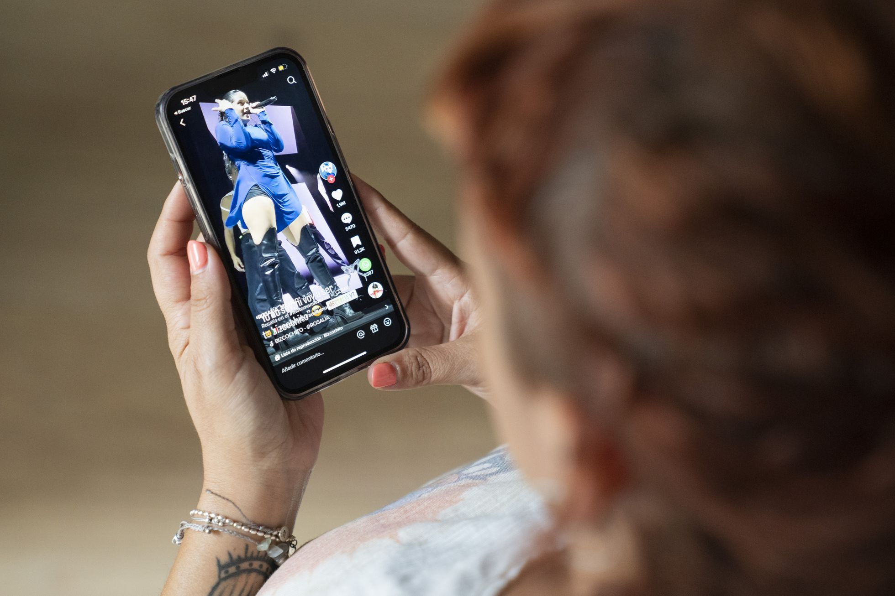

Enganchados a TikTok: la maldición de la curiosidad nunca satisfecha

idea principal: La hiperconectividad hoy en dia es uno de los mayores´problemas de la sociedad actual que en un intento de saciar su curiosidad y aburrimiento termina siendo docil y adicta a los dispositivos electronicos que en un inicio tenian como finalidad disminuir la complejidad de tareas, pero luego de que se implementara el entretenimiento como uno de sus usos la sociedad se vio en una creciente adiccion a estos dispositivos.resumen: Me doy cuenta de que vivo con la maldición de la curiosidad que no se ve nunca satisfecha y de la necesidad de entender qué es lo que pasa y por qué. Una de las fuentes de mi confusión es el valor, positivo o negativo, que se le da al aburrimiento en los tiempos de la hiperconectividad hipervitaminada y el impacto que tiene el aburrimiento crónico en la flojera que llevamos todos encima. Tras mucha lectura y, por qué no decirlo, algún momento de aburrimiento mortal, he comprobado que hay varias líneas de pensamiento. Una, a la que pertenece mi educación formada en el espíritu de los rigores del XIX, las duchas frías y la sobriedad, contempla el aburrimiento como esa manzana que nos tienta y nos arrastra a la molicie, la falta de decoro y, en fin, la suciedad física y moral. Ya saben el dicho “cuando el diablo no tiene qué hacer, con el rabo mata moscas”. Otra que cree que es necesaria la nada del aburrimiento para ser más creativos, menos adictos, menos dóciles en definitiva. Luigi Amara, autor de La escuela del aburrimiento, es de los que receta una sesión intensiva de aburrimiento frente a una modernidad que no calla, que nos alimenta con el soma de la pantalla, el trabajo inagotable y los estados de conciencia alterados. Amara, tras tener su momento Montaigne que ya no es recluirse en una torre a pensar, sino desconectarse de cualquier cacharrito con pantalla y sin ella, se va a seguir aburriéndose a Las Vegas rodeado de ruido y soledad. A raíz de este ejercicio, Amara propone La Internacional Bostezante, que no deja de recordarme a esos juegos florares que tanto gustan a los intelectualoides diletantes que se pueden permitir el bostezo.bibliografia: https://elpais.com/tecnologia/2022-10-27/enganchados-a-tiktok-la-maldicion-de-la-curiosidad-nunca-satisfecha.html
Nombre: Thomas Alejandro Vargas Blanco
Curso: 11°